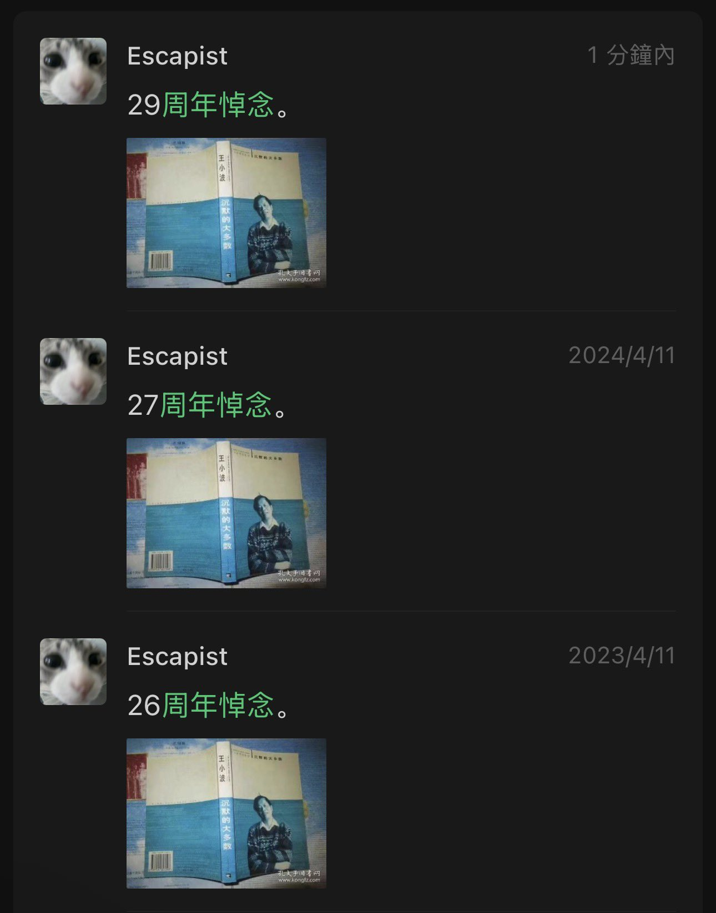
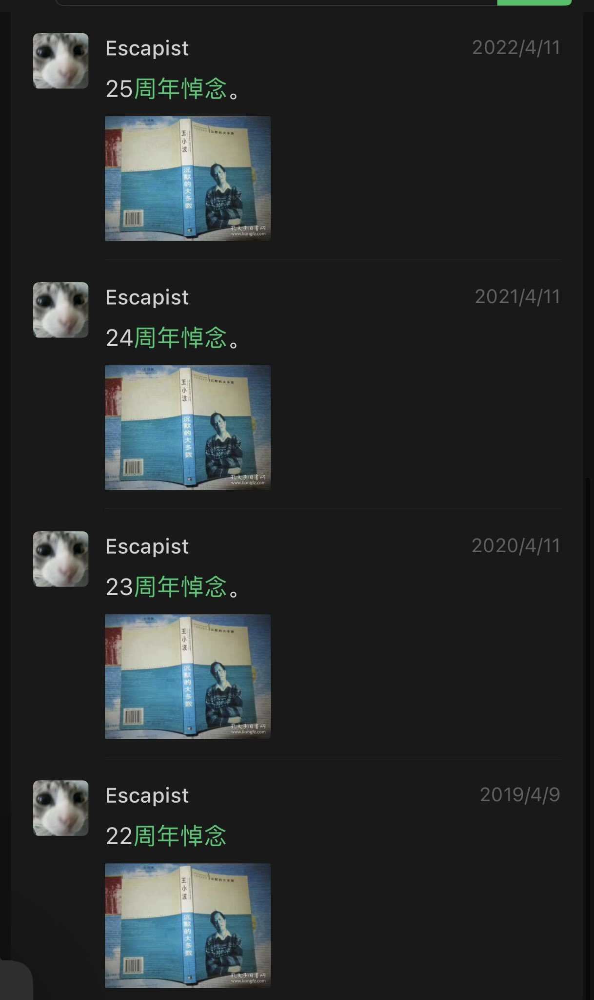

想起特立独行的猪，“被设置”正是父母那一辈人的命运核心词，他们被设置了一辈子：年少时，被设置参加运动；青年时，被设置下乡；成年了，被设置按计划来生孩子；中年时，被设置掏出积蓄买商品房；真老了，还帮子女买房
他们没有按照自己的想法活过他们什么时候有过真正属于自己的不容任何人设置的人生

他们没有按照自己的想法活过他们什么时候有过真正属于自己的不容任何人设置的人生


又是一年忌日，我好想哭，写了一大段文字又删掉了，我有太多太多想对小波说的话……
高中时期，我因为键政喝茶的事情，被班主任呼吁全班孤立我，关系最好的发小在另一个城市。而我和父亲将近十年没见面，我平等地恨着所有人，我不和人类说话，我每天逃课去河边待着。 https://t.co/IqIF8wc2bK
高中时期，我因为键政喝茶的事情，被班主任呼吁全班孤立我，关系最好的发小在另一个城市。而我和父亲将近十年没见面，我平等地恨着所有人，我不和人类说话，我每天逃课去河边待着。 https://t.co/IqIF8wc2bK